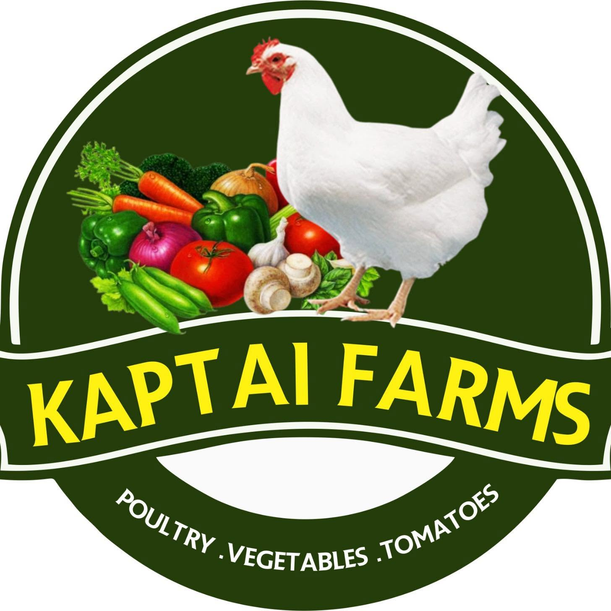
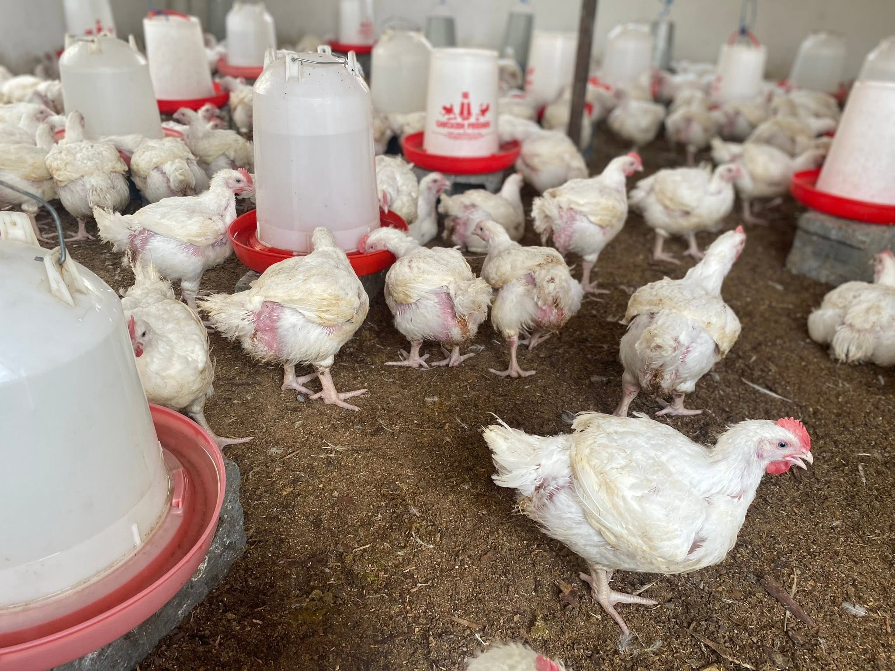
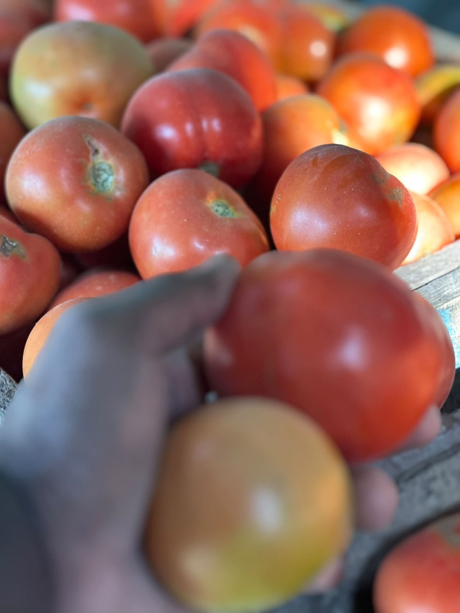
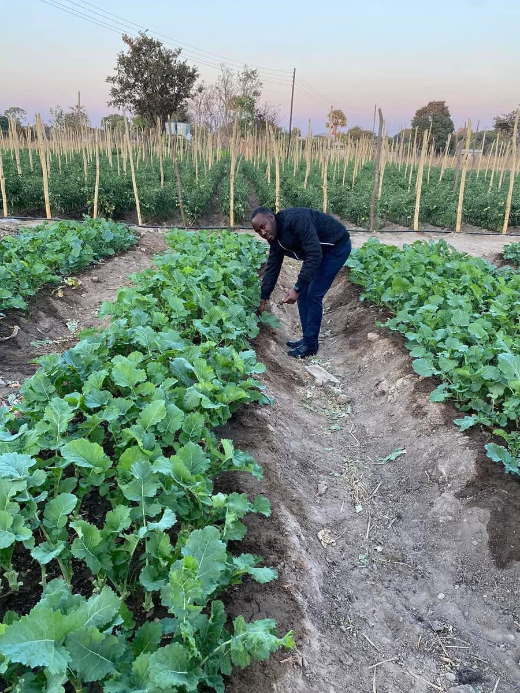
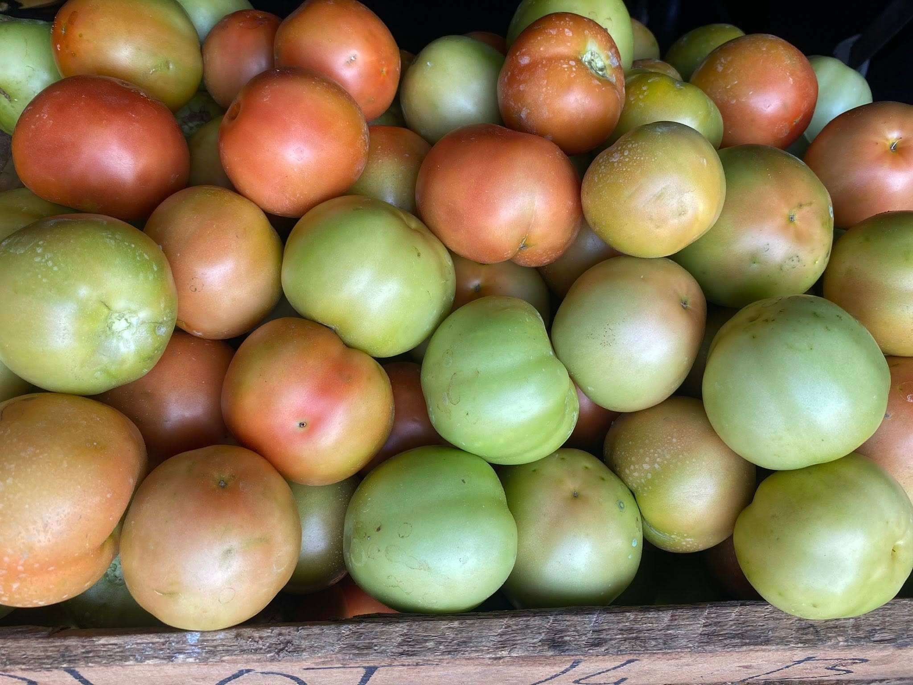
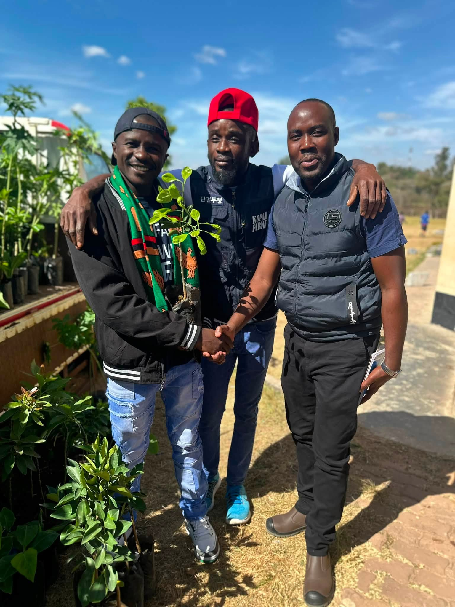

FARM
FRESH
FRESH

KaptaiFarms · NdolaKaptai Farms · Ndola
Poultry, vegetables and tomatoes, raised and grown with the everyday table in mind.
Seasonal goodness, grown
with intention.
01 /
About us
The Kaptai way
At Kaptai Farms, the best part is keeping things honest: quality poultry, colourful vegetables and ripe tomatoes, grown for people and places we know.
Fresh is a daily practice.
What we grow
Follow the page for the latest availability and farm updates.
Colourful, everyday vegetables with a straight-from-the-farm feel.
Ask about availability ↗Services
Simple, local farm support for households, kitchens and customers planning ahead.
Poultry, vegetables and tomatoes, depending on what is fresh and available.
Follow Kaptai Farms on Facebook for the latest farm news and stock updates.
Tell us what you need and start a direct conversation with the farm.
Life at Kaptai
Local images hosted with the website, so the Kaptai story is visible even when Facebook is not.





Who we serve
Reliable, local goodness for the people and businesses that keep Ndola moving.
Everyday ingredients for family meals, celebrations and the table in between.
Farm produce for restaurants, takeaways and other local kitchens.
A farm relationship that starts with a conversation about what you need.
Common questions
Our farm mark features poultry, vegetables and tomatoes. For current availability, message us on Facebook.
Send a message through our Facebook page for the latest stock, timing and order details.
Kaptai Farms is based in Ndola, Zambia.
Keep in touch
For current stock, orders and farm updates, send us a message on Facebook.
Open Kaptai FarmsSales desk
Build a quick quotation or invoice for poultry, vegetables and tomatoes, then download a clean document to share.